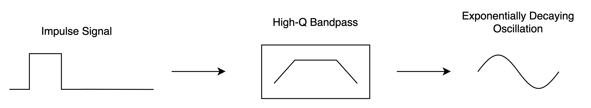
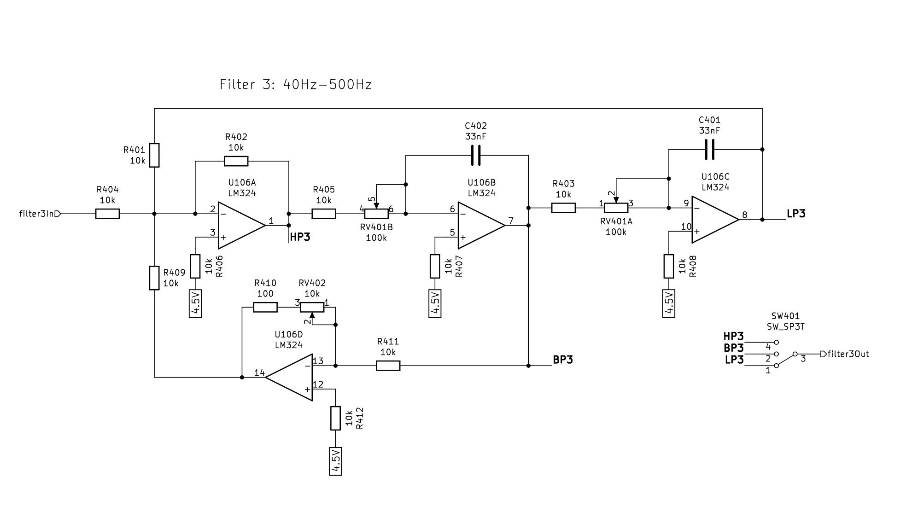
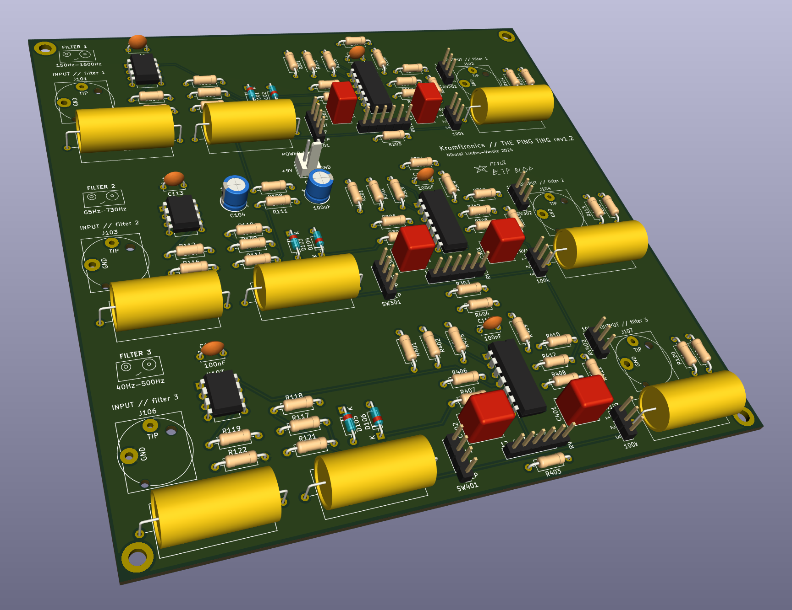
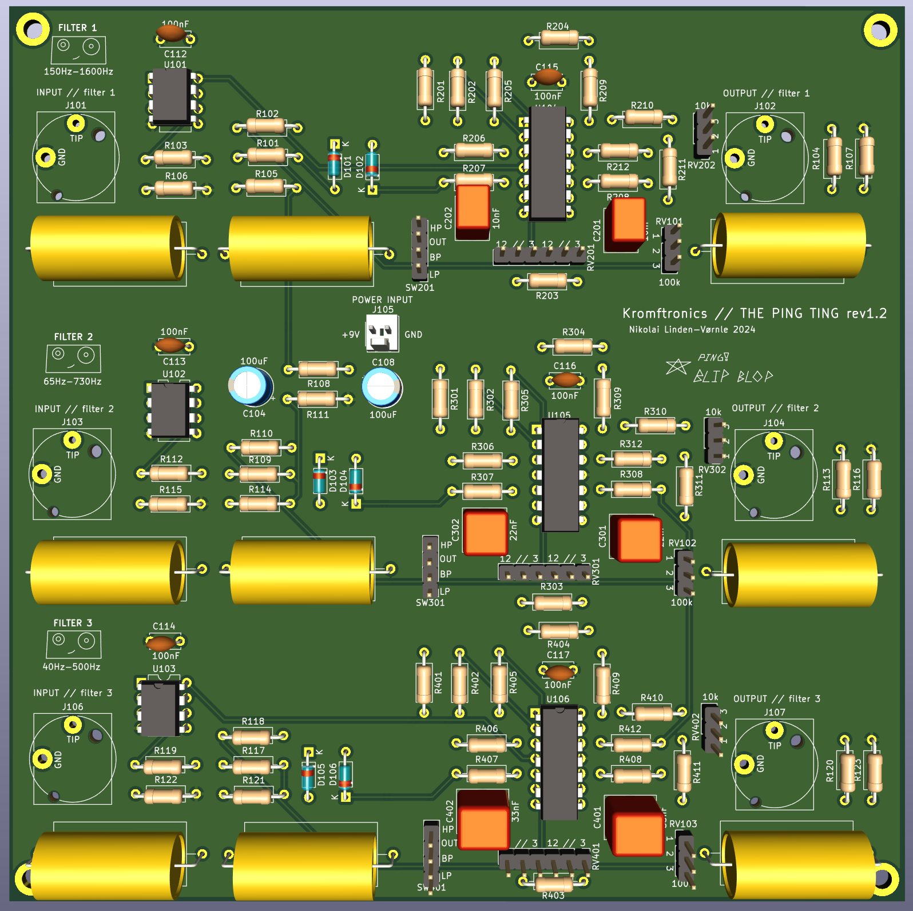
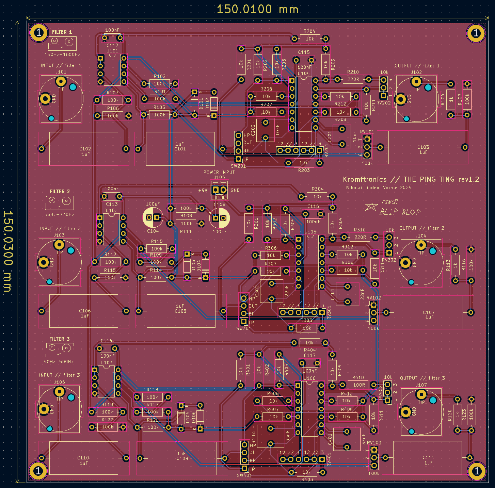

Filters are a really wonderful and powerful tool in music production and sound design. They can be used to control and “filter” out unwanted content of the original unprocessed sound, but can also be used as a creative tool to generate new and interesting sounds. One interesting use of filters as a sound design tool is filter pinging, which will be described later in this article. The Ping Ting is essentially a filter box, containing three parallel high-Q configurable filters with built-in clipping, designed to be able to be “pinged”.
The rest of the article will shortly cover what filter pinging is, the chosen filter architecture, and some comments about the schematic and PCB of The Ping Ting.
Filter pinging is a concept I got introduced to by the musician and YouTuber Hainbach. The concept itself is old and goes back to the days when test equipment was used to make electronic music. Hainbach has an excellent YouTube video where he describes the concept that I highly recommend you watch.
So what is filter pinging? In short, filter pinging is the process of exciting a highly resonant filter with some sort of impulse. A psychical equivalent to this is hitting a glass with a stick, which generates a clear tone that fades away quickly. The same can happen in electrical circuits. Exciting a resonant filter with an impulse will result in a exponentially decaying tone at the output of the filter, which is visualized in figure 1. The higher the resonance/Q-factor the longer and more prominent the oscillation will be. A bandpass filter is also preferable since the filter will only pass one frequency for very high Q-factors.

Figure 1: Conceptual diagram of bandpass filter pinging
So in order to create a filter that is good for pinging, the goal was a bandpass filter topology that can achieve high Q-factors. The book Active Filter Cookbook by Don Lancaster was a great reference in this “search-for-the-right-filter”. Don goes through different filter types and the math behind them. The filter that caught my attention was the state-variable filter.
The State-Variable Filter
The filter topology I ended up using is know as the state-variable filter, which can be seen below in figure 2. The state-variable filter is quite interesting architecture, since you get a lowpass, bandpass, and a highpass filter response with the same circuit (!!!!), depending on where you probe the output. Another important feature is that you can set the cutoff frequency and the Q-factor (resonance) of the filter independently, which is nice when you want to be able to control the amount of “pinging” separately from the frequency. The article about the state-variable filter from electronics-tutorials is a great resource in order to understand how the state-variable filter works, and I would recommend that you read this article.

Figure 2: One of the three state-variable filters in “The Ping Ting”
The state-variable filter is a second-order filter that is implemented using an inverting summing amplifier (U106A in figure 2) and two integrators (U106B and U106C in figure 2). The math is a bit complicated, but essentially, you control the cutoff frequency of both the lowpass, highpass, and bandpass filter as
where $latex C &bg=000000&fg=ffffff$ is the value of the two capacitors in the feedback path of the two integrators and $latex R_V&bg=000000&fg=ffffff$ is the resistance of the two variable resistors in the integrators. Two be able to control both the integrators at the same time, I used a dual-gang potentiometer.
The Q-factor of the state-variable filter is controlled by the amount of feedback from the bandpass output of the filter that is being fed back to the inverting summing amplifier. You may notice that the state-variable filter design that I am using have an opamp in the feedback path from the bandpass output compared to the schematics that are shown in the article by electronics-tutorials. This extra buffering helps achieving higher Q-factors and is suggested in the design in Don Lancaster’s book, which is what I based my design on. The Q-factor is controlled by the variable resistor RV402 (e.g. potentiometer) in the feedback path, and can be estimated as
which theoretically should result in Q-factor 100(!) when the variable resistor RV402 is zero. But, in reality, such Q-factors are hard to achieve due to instability and non-ideal capacitors, which will be the topic of the next section.
High-Q Capacitors
An ideal capacitor is just that. A capacitor. But in reality, a capacitor also has imperfections like parasitic resistance and inductance, which degrades the performance of the capacitor. The name “Q-factor” is actually short for quality factor, which refers to how ideal or high-quality the capacitor is (EE Power has a good article about Q-factor). In short, what all of this means is that a high-Q capacitor results in a “better” capacitor, which allows us to achieve a higher Q-factor in the state-variable filter due to the integrator capacitors being better energy storing devices.
The limiting factor in achieving a high-Q capacitor is the equivalent series resistance (ESR). Mathematically, the Q-factor of a capacitor can be defined as
$latex Q = \frac{1}{2\pi\cdot f \cdot C \cdot R_{ESR}} &s=2&bg=000000&fg=ffffff$,
which is the ratio between the reactance of a capacitor and its ESR. The ESR essentially turns the energy storing capacitor into a component with losses. How much loss there in the capacitor compared to its reactance is then the Q-factor. In other words, having a capacitor with a very small ESR results in a high-Q capacitor.
For The Ping Ting, I used polypropylene (PP) film capacitors from WIMA which are suppose to be a capacitor type with the some of the highest Q-factors. The “red boxes” on the PCB render below in the following section are the WIMA capacitors used in the integrators. In general, these types of capacitors are some of the best for audio purposes. Just to be sure that all of this capacitor stuff wasn’t snake oil, I tried to use standard ceramic disc capacitors when I tested the circuit on breadboard, but I wasn’t able to get the “pinging” from the standard ceramic disc capacitors due to their lower Q-factor. So for these pinging applications, having a good quality capacitor was indeed needed to achieve the performance that I wanted. You can try changing the capacitors yourself and hear the impact.
Schematic, PCB & Design Files
The schematic and PCB of The Ping Ting was designed using KiCad, which is very nice open source PCB CAD tool. All of the schematics and PCB files for The Ping Ting are available on my GitHub, including the 3D renders below:
The gallery below shows the schematic of The Ping Ting. The Ping Ting is a single supply design, meaning that it only needs one +9V power supply to drive the circuit. Compared to a dual supply circuit (e.g +/-15V), where all of the signals are centered around ground, we need to create a DC of 4.5V at the input of all of the opamps for it to operate correctly. This is why most of active circuits are referencing the 4.5V reference voltage instead of ground and also why the input buffers consisting of U101A, U102A, and U103A, AC couples the input signal to the internal 4.5V reference voltage.
After each filter, we have two anti-parallel diodes and a non-inverting opamp configuration with a gain of two. This serves as a clipper/limiter and makeup gain stage after the state-variable filters. The clipping is implemented in order to tame the VERY large signal swings that occur when the filters are adjusted to have a high Q-factor, and, it also creates a very nice gritty tone when you drive the circuit with a large input amplitude or with a high-Q setting.
The last output highpass filter is just added to removed the 4.5V offset voltage we introduced in our circuit to use our single +9V supply. I would admit that I could have just added the 1uF capacitor and the 1k resistor at the output of the last opamps, before the 100k volume potentiometer, but the circuit seems to be working fine, so I haven’t changed the design.
KiCad has this very nice 3D render function, which lets you see the PCB with components included. It is a very neat tool to check the expected dimensions and to have a look at the PCB before you send it off to manufacturing. The gallery below shows the 3D model of the PCB and the PCB layout in KiCad. You might ask why I have chosen to use the VERY large yellow film capacitors. The answer is that I ordered a big box of random film capacitors from Banzai Music, so I had them laying around. Better to use what you have then let it sit in the cupboard.



A finally note is that I initially design all of the bandpass feedback circuits to have a minimum feedback resistance of 100Ω. This value worked fine for the low frequency filter (filter 3), but made the mid- and high-frequency filters unstable for large Q-factor values. To stabilize the circuit, I changed the minimum feedback resistance in filter 1 and 2 to 220Ω, which reduced the Q-factor of the two filters, but made them stable and more useful. As with everything in engineering, everything is a tradeoff ( ‾ ʖ̫ ‾)
Conclusion
My initial goal for this project was to create a bandpass filter with a very high Q-factor, intended to be used for filter pinging. The state-variable filter ended up being the best choice for this, and also gave me a lowpass and highpass filter “for free”, which was quite nice. The importance of high-Q good quality capacitors also really showed that the ideal theoretical components aren’t that ideal in the real world, which was a great learning for me. All in all, I’m pretty satisfied with the project and I hope that it can be useful for other people trying to design some “pingy” filters.